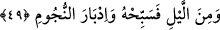

(s.a.)’in kabrine yetmiş bin melek iner, kanatlarını o kabrin üzerine koyar ve onu akşama
kadar korurlar. Yine aynı şekilde onu akşamdan sabaha kadar koruyan yetmiş bin melek
vardır ki bunlar da onu korur ve bu hal kıyâmete kadar devam edecektir.
“Kalktığın zaman da Rabbini hamd ile tesbih et.” Hangi makamdan kalkarsan kalk,
yüce nimetlerine hasren Rabbine karşı bir övgüye gark olmuş halde O’nu münasib
olmayan sıfatlardan tenzih suretiyle an.
Said b. Cübeyr ve Atâ bu âyetin tefsirini şöyle yaparlar: Oturduğun meclisten
kalktığın zaman Allah’a hamderek tesbihatta bulun. Zira bu, hamd ile tesbihatın,
meclisinizin hayır ve sevabını; hayrı nâkıs olan meclisinizin ise günâhının keffâretini
temin edici mâhiyette olduğu mânâsına gelmektedir.
Ebu Hüreyre (r.a.)’dan rivâyet edilen bir hadis-i şerife göre Rasûlullah (s.a.): “Her
kim bir meclise oturup orada değersiz, çirkin ve kimsenin anlamadığı boş kuru
gürültü
ve
dedikodu
yapar
da
kalkmadan
önce
derse oturmasıyla kalkması arasında
konuştuğu tüm kötü sözlere bu da keffaret olur”[61] buyurmuştur.
Fethu’l-Garib’deki rivâyette hadis-i şerif, “Muhakkak bu sözü bağşılanmıştır”
şeklinde geçmiştir. Yâni bu bağışlama, gıybet gibi kul hakkına taalluk etmeyen küçük
günahlar için söz konusudur. Dahhak ve Rebî’ ise âyet-i kerîmedeki övgü ile ilgili
tesbihatın
tefsîrinin:
“Yâni
namaz
için
kalktığında;
duâsını
oku”
şeklinde
olduğu
görüşündelerdir.
Kelbî âyetteki bu tesbihattan maksadın, insanın yataktan kalktığı andan itibaren namaz
kılana kadar söylediği tesbihat olduğunu belirterek bu görüşünü Âsım b. Hâmid’den
rivâyet olunan şu nakille te’yid eder: Âsım b. Hâmid, Hz. Âişe’ye, “Rasûlullah (a.s.)
gece namazına kalktığı zaman ibâdetine nasıl başlardı?” diye sormuş, validemiz de:
“Önce onar defa tekbir, tahmîd ve tesbîhatta bulunur, daha sonra onar defa tehlil ve
istiğfar edip
duâsını okurdu. Kıyâmet günü makamının onu
sıkmasından Allah’a sığınır, bu yönden istiâzede bulunurdu” şeklinde cevap vermiştir.
[62]
49. Gecenin bir kısmında ve yıldızların batışından sonra da O’nu tesbih et.
“Gecenin bir kısmında O’nu tesbih et.” Gecenin bir kısmının tesbih ve namaz ile
münferiden zikredilmesinden maksad, âyette bu vaktin fiilinden önce getirilmesinden de
açıkça görüleceği üzere geceleyin yapılan ibâdetin nefse çok ağır ve riyaya çok uzak
olduğunu belirtmek içindir.